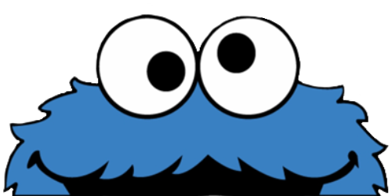
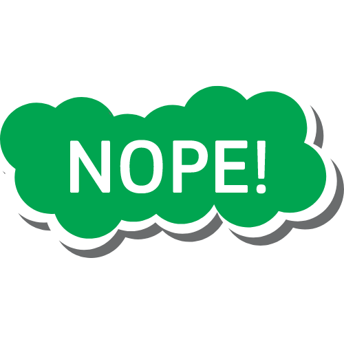
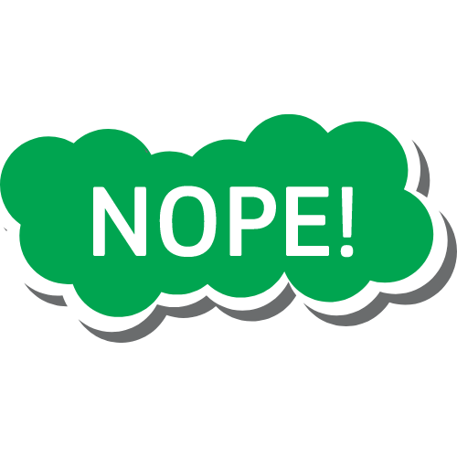

Drag And Drop
Feed Me!
상자안의 음식을 드래그해 오른쪽 하단의 쿠키몬스터에게 먹을 걸 주세요 :)
(쿠키몬스터가 보이지 않는다면, 맨 위 "CLICK ME! 글자 위 쿠키몬스터를 눌러주세요")

Q1. 가장 최근에 무슨 일을 했나요?
해외향 역직구 플랫폼 스타트업의 상품 운영팀에서 신입으로 근무했다가 퇴사했습니다.
Q. 해외 역직구 플랫폼은 생소한데, 그게 뭐죠?
한국에서 해외 배송 상품을 직구하는 건 많이 들어보셨을 거에요.
반대로 한국의 상품들을 해외로 내보내는 플랫폼입니다.
현재는 8개국가의 주로 해외교민들을 대상으로 서비스 했어요.
Q.상품운영팀은 어떤 일을 하나요?
'상품을 운영'하는 전반적인 프로세스에 관여합니다.
1. 상품을 노출해 고객들에게 보여주고, 시즌과 이슈에 따라 고객들에게 추천할 상품과 기획전을 만드는 일
2. 고객이 상품을 구매한 이후, 고객의 문 앞에 배송되기 까지의 뒷 단계를 CS와 물류와 함께 협업하며 관리하는 일
Q2. 전공과 직무?
저는 인도어과를 전공했고, 경제학을 부전공했어요.
전공에 관심이 많아서 재학 중에는 인도에서 1년간 공부하기도 했고,
전공을 살리는 방향으로 진로를 생각했지만 중간에 생각을 바꾸었어요.
대학 졸업 직후에는 마케팅 직무를 희망했었어요.
퇴사 전 회사에서는 MD(중에서도 카테고리 매니저)와 운영의 성격이 혼재된 상품운영의 직무에 있었으니
마케팅도, 전공을 살리는 직무도 결국 선택하지 않았어요. 그리고 그 곳에서 개발에 흥미를 가지게 되었습니다.
20대까지는 오랜시간 몸담을 업계와 직무에 대해 탐색하고,
방향을 잡는 것이 가장 큰 목표라 생각하기에 서두르지 않고 하고싶은 일들을 하나씩 경험해보고 있습니다. :)
Q3. TMI
- 영등포 삽니다
- 취미는 롱보드 타기, 춤추기
- 일식 좋아합니다. 라멘, 돈부리, 일본 가정식 등등!
- 파란색을 좋아합니다
- 96년생입니다
- 요즘 코딩하면서 집중이 안될 땐 침착맨 유튜브를 틀어놓고 합니다
- 자세가 안 좋아서 병원에 갔더니 일자목이래요. 도수치료 받으면서 많이 좋아졌습니다.
(여러분과 대화할 때 한번씩 목을 움직일 수도 있어요.. 목이 뻐근할 때가 있습니다. 정말 TMI죠?)
- 최근에 본 것 중 가장 재미있었던 작품은 오징어게임과 스우파입니다
- 개인적으로 좋아하는 넷플릭스 시리즈는 OA, 어나더 라이프입니다. 제 취향이에요 ㅎㅎ


 
